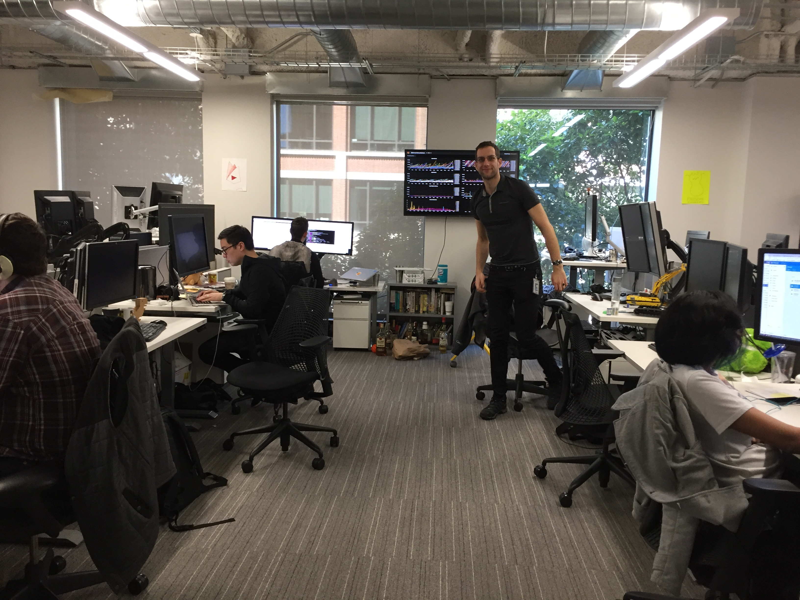

I built a fake fireplace in celebration of our team shipping Cloud Functions for Firebase. The codename was “hearth” — the product was almost ready for public beta by the time I joined the team, yet I know it was an epic journey to create a long-awaited feature and I felt the milestone deserved dramatic punctuation.
If you would like to build your very own fake fireplace, here’s how…
I reached out to our helpful facilities staff to make sure that I understood the constraints of the space. (I didn’t want to buy or create something that would be immediately taken down!) James Miller from facilities investigated some options:
“Since a hearth is technically the flat stone floor or the part outside of the fireplace, putting up just a fireplace and mantel leaves out the most important part, but including it presents a tripping hazard.” He suggested a quick and easy solution would be to temporarily change the display play a 8hr yule log video or on extra computer monitor with some fake foam bricks. He noted that some prop fireplaces which look pretty good in the photos, but are just cardboard. There are more expensive electronic fireplaces, but we can’t have anything that includes heating features similar to a space heater, and he reported “most that I’ve seen online are also missing the most important part… the actual hearth.”
Initially I felt that a literal interpretation of the “hearth” code name was not a critical element. We explored buying a real fake fireplace, but the ones we found were very small and we felt they were very expensive relative to the potential impact. However, his thoughts on the meaning of “hearth” later led to some important design elements. I love being involved in a collaborative creative process!
James suggested that something in a stage prop style would have dramatic effect, perhaps using styrofoam so that it would be light and easy to move, if we needed to shift it in the future around team moves. In brainstorming location, he helped me remember to pick out a spot with an electrical outlet.
I surreptitiously took a photo of the area, and arrived early one morning with a tape measure to determine its maximum dimension.I then measured the computer monitor I planned to use to determine the minimum internal dimension.
There was actually a third, very important measurement: the internal size of my car, which later became a critical optimization. I designed the fireplace in three pieces, so it could fit into the car, which also made it much lighter and easier to transport. Styrofoam is rather fragile, and the smaller pieces fit easily through doors.
Tools: tape measure, hammer, screw driver, propane torch, safety googles, mask, electric drill, electric sander, garden shears, mat knife, level, steel square
Supplies: small nails, wood, styrofoam panels, gorilla glue, sandpaper, acrylic paint (red, yellow, white, black), gloss latex paint (off-white), sharpie, cardboard
I had never worked with styrofoam before and read that it could be carved with a sharp knife, acetone or a hot knife. If it were a small project, a regular soldering iron would likely have been fine, but I wanted something that would be fast and really liked that the propane torch I found had two different tips as well as an open flame option. The small hand-held propane filled torch is also easier to work with than my electric soldering iron which requires an extension cord.
I tested carving and painting the styrofoam very early, including figuring out how long the paint took to dry. I found that painting the white cracks before painting the red bricks made it come out a bit better. It was also good to test carving to create an effect that looks like mortar.
I studied sculpture in college, so I had practical experience with wood construction, and learned a bit more from the amazing people who publish about their experience on the web. Here are some links to resources that I found particularly helpful.
Tutorials
Videos
{kind=link}